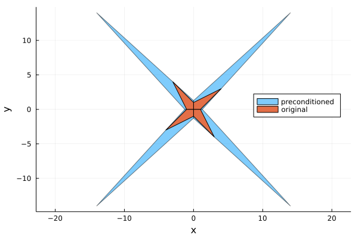

Preconditioning interval linear systems
Basic concepts
Consider the square interval linear system
\[\mathbf{Ax}=\mathbf{b},\]
preconditioning the interval linear system by a real matrix $C$ means to multiply both sides of the equation by $C$, obtaining the new system
\[C\mathbf{Ax}=C\mathbf{b},\]
which is called preconditioned system. Let us denote by $A_c$ the midpoint matrix of $\mathbf{A}$. Popular choices for $C$ are
- Inverse midpoint preconditioning: $C\approx A_c^{-1}$
- Inverse diagonal midpoint preconditioning: $C\approx D_{A_c}^{-1}$ where $D_{A_c}$ is the diagonal matrix containing the main diagonal of $A_c$.
Advantages of preconditioning
Using preconditioning to solve an interval linear system can have mainly two advantages.
Extend usability of algorithms
Some algorithms require the matrix to have a specific structure in order to be used. For example Hansen-Bliek-Rohn algorithm requires $\mathbf{A}$ to be an H-matrix. However, the algorithm can be extended to work to strongly regular matrices using inverse midpoint preconditioning. (Recall that an interval matrix is strongly regular if $A_c^{-1}\mathbf{A}$ is an H-matrix).
Improve numerical stability
Even if the algorithms theoretically work, they can be prone to numerical instability without preconditioning. This is demonstrated with the following example, a more deep theoretical analysis can be found in [NEU90].
Let $\mathbf{A}$ be an interval lower triangular matrix with all $[1, 1]$ in the lower part, for example
using IntervalLinearAlgebra
N = 5 # problem dimension
A = tril(fill(1..1, N, N))5×5 Matrix{Interval{Float64}}:
[1, 1] [0, 0] [0, 0] [0, 0] [0, 0]
[1, 1] [1, 1] [0, 0] [0, 0] [0, 0]
[1, 1] [1, 1] [1, 1] [0, 0] [0, 0]
[1, 1] [1, 1] [1, 1] [1, 1] [0, 0]
[1, 1] [1, 1] [1, 1] [1, 1] [1, 1]and let $\mathbf{b}$ having $[-2, 2]$ as first element and all other elements set to zero
b = vcat(-2..2, fill(0, N-1))5-element Vector{Interval{Float64}}:
[-2, 2]
[0, 0]
[0, 0]
[0, 0]
[0, 0]the "pen and paper" solution would be $[[-2, 2], [-2, 2], [0, 0], [0, 0], [0, 0]]^\mathsf{T}$, that is a vector with $[-2, 2]$ as first two elements and all other elements set to zero. Now, let us try to solve without preconditioning.
solve(A, b, GaussianElimination(), NoPrecondition())5-element Vector{Interval{Float64}}:
[-2, 2]
[-2, 2]
[-4, 4]
[-8, 8]
[-16, 16]solve(A, b, HansenBliekRohn(), NoPrecondition())5-element Vector{Interval{Float64}}:
[-2, 2]
[-2, 2]
[-4, 4]
[-8, 8]
[-16, 16]It can be seen that the width of the intervals grows exponentially, this gets worse with bigger matrices.
N = 100 # problem dimension
A1 = tril(fill(1..1, N, N))
b1 = [-2..2, fill(0..0, N-1)...]
solve(A1, b1, GaussianElimination(), NoPrecondition())100-element Vector{Interval{Float64}}:
[-2, 2]
[-2, 2]
[-4, 4]
[-8, 8]
[-16, 16]
[-32, 32]
[-64, 64]
[-128, 128]
[-256, 256]
[-512, 512]
⋮
[-2.47589e+27, 2.47589e+27]
[-4.95177e+27, 4.95177e+27]
[-9.90353e+27, 9.90353e+27]
[-1.98071e+28, 1.98071e+28]
[-3.96141e+28, 3.96141e+28]
[-7.92282e+28, 7.92282e+28]
[-1.58457e+29, 1.58457e+29]
[-3.16913e+29, 3.16913e+29]
[-6.33826e+29, 6.33826e+29]solve(A1, b1, HansenBliekRohn(), NoPrecondition())100-element Vector{Interval{Float64}}:
[-2, 2]
[-2, 2]
[-4, 4]
[-8, 8]
[-16, 16]
[-32, 32]
[-64, 64]
[-128, 128]
[-256, 256]
[-512, 512]
⋮
[-2.47589e+27, 2.47589e+27]
[-4.95177e+27, 4.95177e+27]
[-9.90353e+27, 9.90353e+27]
[-1.98071e+28, 1.98071e+28]
[-3.96141e+28, 3.96141e+28]
[-7.92282e+28, 7.92282e+28]
[-1.58457e+29, 1.58457e+29]
[-3.16913e+29, 3.16913e+29]
[-6.33826e+29, 6.33826e+29]However this numerical stability issue is solved using inverse midpoint preconditioning.
solve(A, b, GaussianElimination(), InverseMidpoint())5-element Vector{Interval{Float64}}:
[-2, 2]
[-2, 2]
[-0, 0]
[-0, 0]
[-0, 0]solve(A, b, HansenBliekRohn(), InverseMidpoint())5-element Vector{Interval{Float64}}:
[-2, 2]
[-2, 2]
[-0, 0]
[-0, 0]
[-0, 0]Disadvantages of preconditioning
While preconditioning is useful, sometimes even necessary, to solve interval linear systems, it comes at a price. It is important to understand that the preconditioned interval linear system is not equivalent to the original one, particularly the preconditioned problem can have a larger solution set.
Let us consider the following linear system
A = [2..4 -2..1;-1..2 2..4]2×2 Matrix{Interval{Float64}}:
[2, 4] [-2, 1]
[-1, 2] [2, 4]b = [-2..2, -2..2]2-element Vector{Interval{Float64}}:
[-2, 2]
[-2, 2]Now we plot the solution set of the original and preconditioned problem using Oettli-Präger
using LazySets, Plots
polytopes = solve(A, b, LinearOettliPrager())
polytopes_precondition = solve(A, b, LinearOettliPrager(), InverseMidpoint())
plot(UnionSetArray(polytopes_precondition), ratio=1, label="preconditioned", legend=:right)
plot!(UnionSetArray(polytopes), label="original", α=1)
xlabel!("x")
ylabel!("y")WARNING: using LazySets.∅ in module IntervalLinearAlgebra conflicts with an existing identifier.
WARNING: using LazySets.Interval in module IntervalLinearAlgebra conflicts with an existing identifier.
Take-home lessons
- Preconditioning an interval linear system can enlarge the solution set
- Preconditioning is sometimes needed to achieve numerical stability
- A rough rule of thumb (same used by
IntervalLinearAlgebra.jlif no preconditioning is specified)- not needed for M-matrices and strictly diagonal dominant matrices
- might be needed for H-matrices (IntervalLinearAlgebra.jl uses inverse midpoint by default with H-matrices)
- must be used for strongly regular matrices